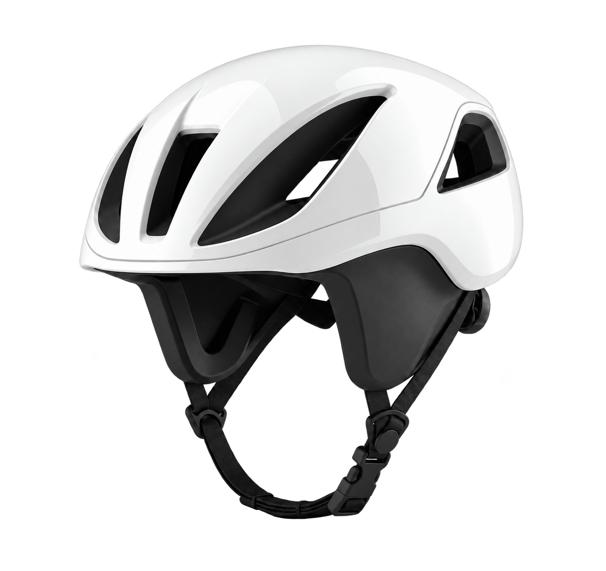
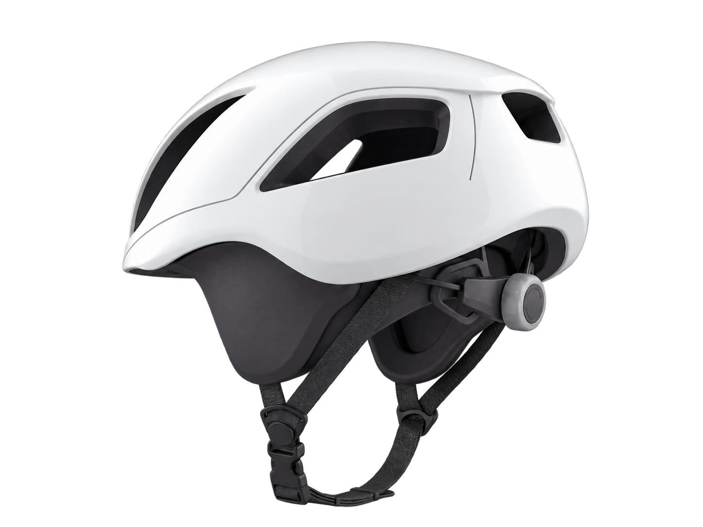
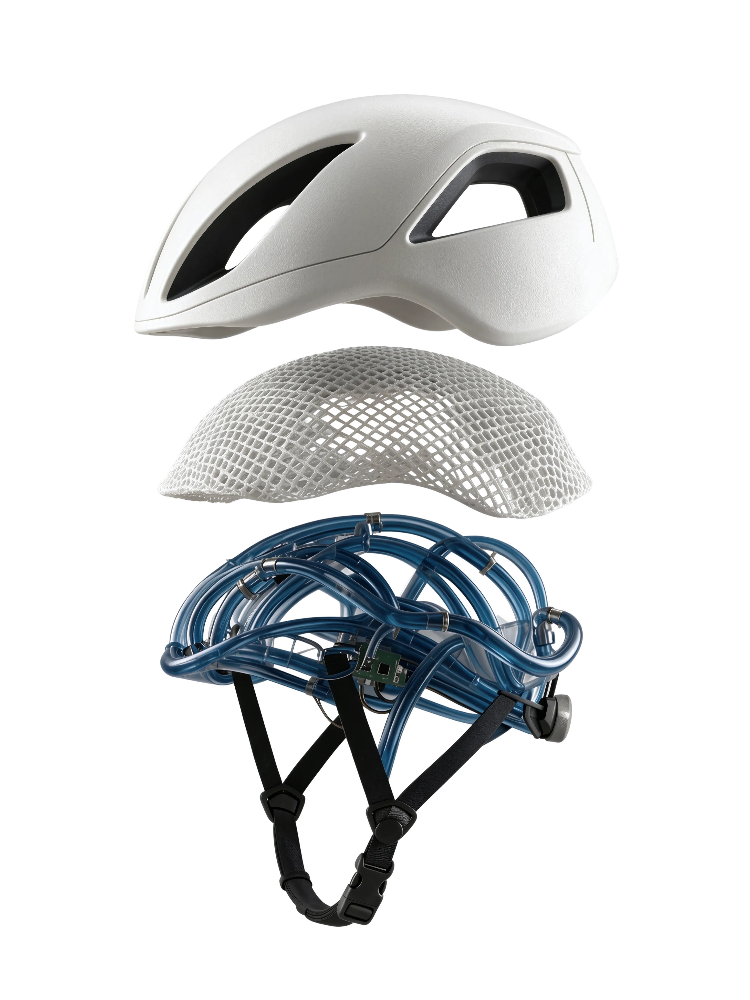
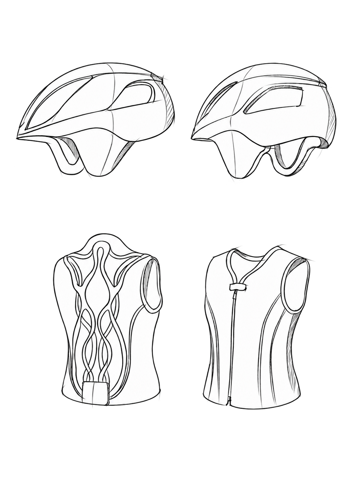
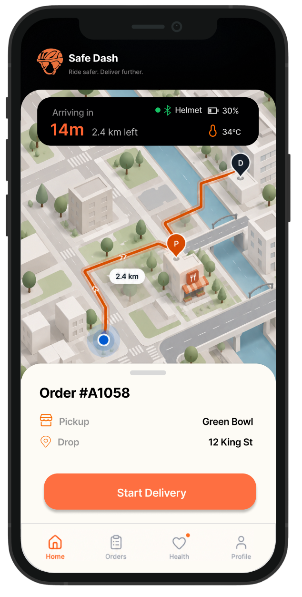
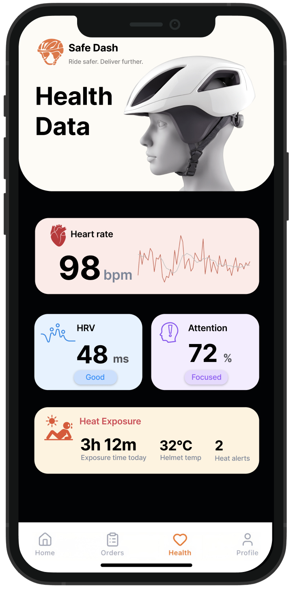
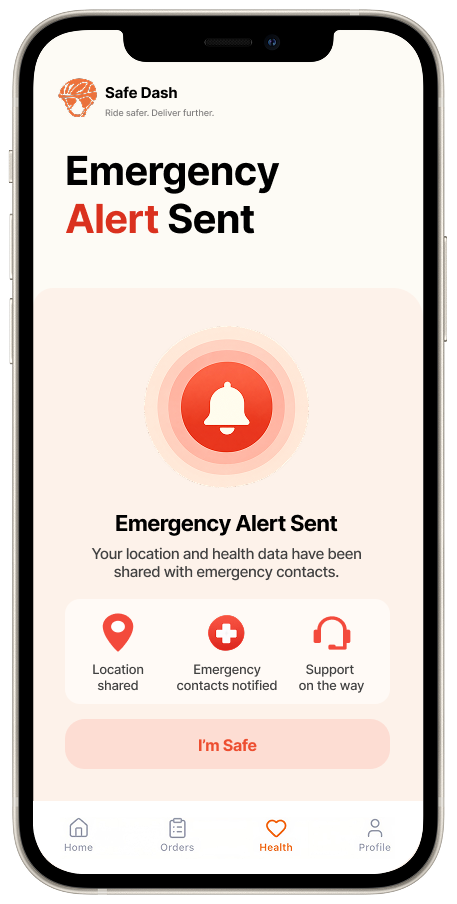
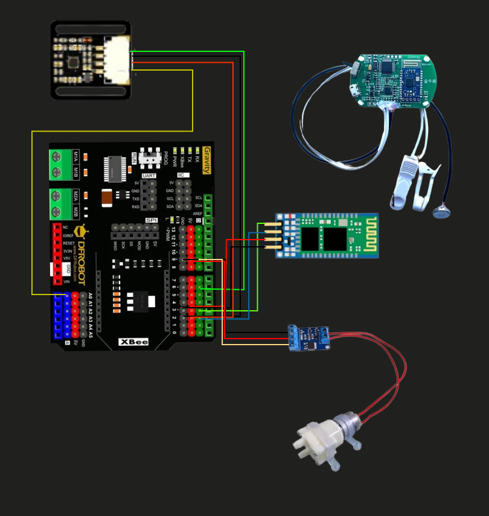
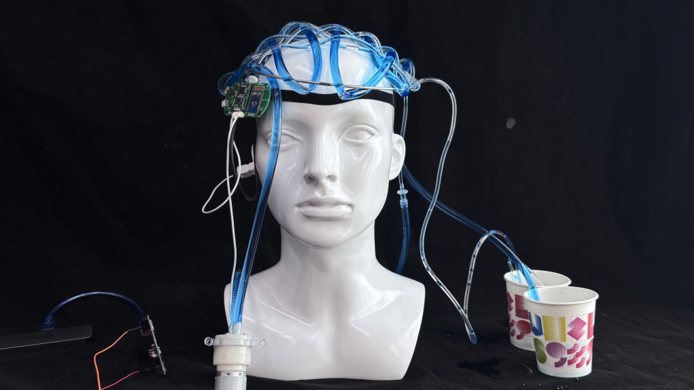

01
Outdoor exposure
Riders spend long stretches outdoors, exposed to sun and heat from surrounding streets.

Smart cooling & health monitoring for delivery riders
A wearable concept for delivery riders working in hot conditions, bringing smart cooling and health monitoring into their working day.
01 / THE CHALLENGE
High temperatures are only part of a rider’s working day. Physical effort and the pace of deliveries shape when they can cool down.
Riders spend long stretches outdoors, exposed to sun and heat from surrounding streets.
Cycling, carrying orders and climbing stairs add physical effort throughout a delivery.
Peak-hour demand and continuous orders make it difficult to pause, cool down and recover.
DESIGN QUESTION
How can cooling and health awareness fit into a rider’s working day?
02 / RIDER INTERVIEWS
3 riders · 2–4 years of delivery experience · 7–9 working hours a day
WORKING THROUGH PEAK HOURS
“Even when it is very hot, I still work during peak hours because there are more orders.”
More orders during peak hours are a reason to keep working in the heat.
FINDING TIME TO RECOVER
“When orders keep coming in, it is hard to stop and rest, even when the weather is very hot.”
Cooling needs to fit around deliveries, with limited opportunities to stop.
Support cooling while riders are moving and working, alongside the water, sun protection and breaks they already rely on.
Make physical-condition information easy to notice and understand during a busy working day.
Keep the wearable lightweight and breathable for long hours of riding, carrying orders and moving between stops.
03 / DESIGN CONCEPT
A helmet concept combining ventilation, a breathable liner and an integrated liquid-cooling structure.



Flexible liquid-cooling tubes sit inside the helmet liner, alongside front ventilation channels.
The monitoring concept connects physical-condition information with feedback during the working day.
Adjustable straps and a breathable mesh liner support the fit during movement.
Fit the helmet before a delivery.
Bring cooling and monitoring into the delivery routine.
Stay aware of physical condition during work.
A lightweight shell concept with integrated ventilation openings.
A breathable mesh layer between the rider and the helmet structure.
Flexible PVC tubing and a control module integrated into the helmet liner.
DESIGN EXPLORATION
The sketches explore two wearable formats: a helmet focused on the head, and a vest with cooling paths across the torso. The helmet is developed further in the rendered concept above.

04 / USING HEATGUARD
A proposed app journey connecting the helmet with the rider’s daily delivery routine.
Check the helmet connection and battery alongside the route and order details, then start the delivery.
View heart rate, HRV and heat-exposure information. In the proposed flow, detected heat stress activates liquid cooling.
The concept recommends rest and pauses new orders if risk persists. The emergency screen shows shared location and contact notifications.



05 / FUNCTIONAL PROTOTYPE
A working prototype brought physiological sensing and liquid circulation together on a head-mounted setup.

PPG and EEG sensors feed physiological signals into the prototype.
Arduino brings the sensor inputs into the control workflow, with Bluetooth transmission included in the system design.
The pump circulates liquid through flexible tubes arranged around the head.
06 / BEYOND THE PROTOTYPE

The physical prototype brings the concept into a delivery context. Using it during deliveries raises a wider question: how would income, dispatch decisions and customer expectations support a rider taking a break?
STAKEHOLDER PERSPECTIVES
Health · rest · income
Dispatch & rest policies
Can a health break fit the dispatch and performance rules?
Delivery & updates
How are delays explained or orders reassigned?
Equipment & data support
Who maintains the device and controls access to rider data?
07 / REFLECTION
Cooling support needs to work alongside dispatch and rest policies. A prompt to take a break is useful only when riders have a practical way to act on it.
The prototype explores sensing and liquid circulation together. Cooling effectiveness, monitoring reliability and comfort over a full shift still need evaluation.
Discuss wearing burden, data use and rest decisions with riders, and explore with platforms how a health alert could affect an active delivery.